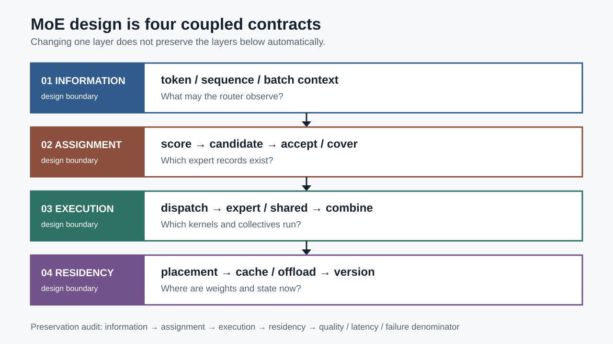
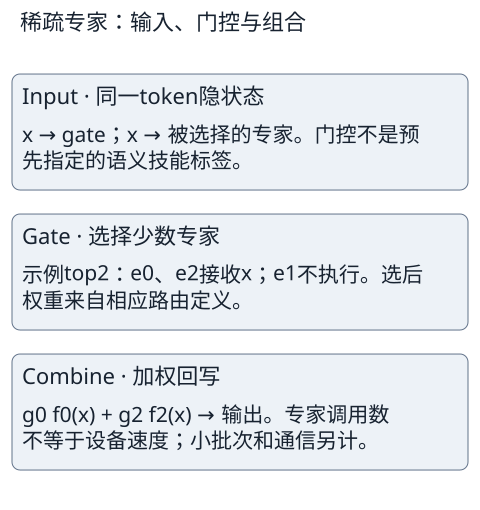
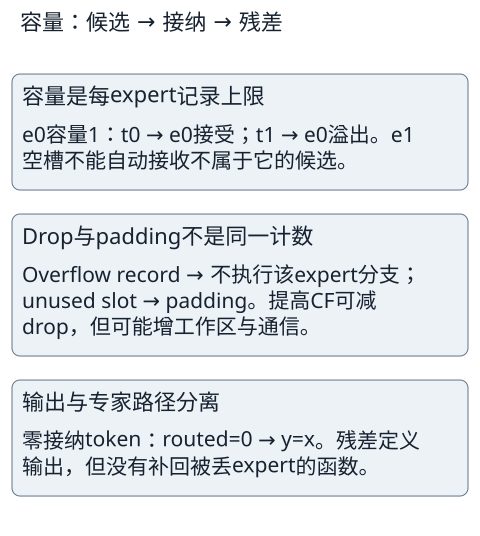
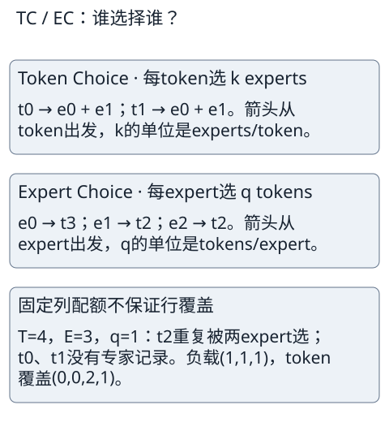
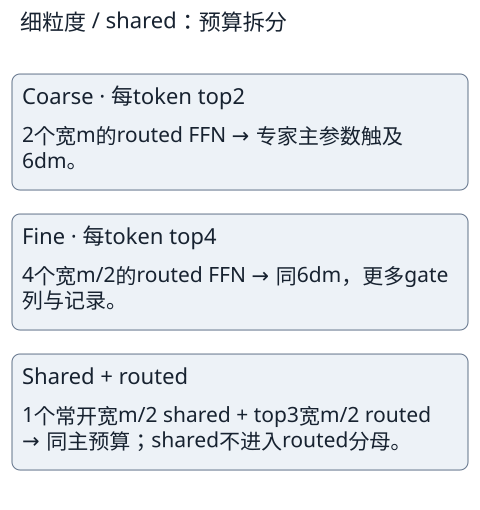
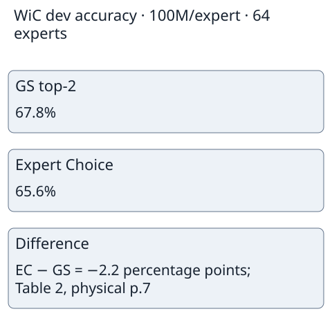
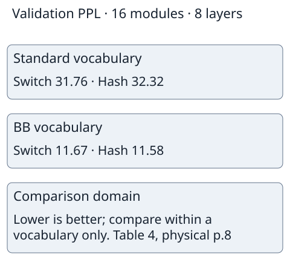

AI SURVEYS / MIXTURE OF EXPERTS
Contents
MoE结构探索：从条件计算到路由、专家结构与系统代价
Howie Yin · Independently published in AI Surveys
日期：2026-11-12。文献内容截止：2026-11-11；补充检索执行：2026-11-12。本文为问题导向的叙述性综述，不是穷尽性系统综述，不报告新模型训练或设备性能实验。
摘要
混合专家模型（Mixture of Experts，MoE）部分解耦参数容量与输入计算量。综述依据原论文、版本化源码和解析反例，比较路由、专家结构及系统代价，建立信息、分配、执行、驻留四层保持性决策协议。分析显示，负载均衡不保证令牌覆盖，残差输出不保证专家路径，低激活量不保证低时延；比较须统一训练预算、信息边界与失败分母。由此提出因果路由、专门化诊断和版本化服务的研究议程，不报告新硬件实验。
关键词：混合专家；条件计算；专家路由；负载均衡；专家并行；推理系统
English title and abstract
Mixture-of-Experts Structures: Conditional Computation, Routing, Expert Design and Systems Costs
Abstract. Mixture-of-experts (MoE) models partially decouple parameter capacity from computation per input. This problem-oriented survey compared routing rules, expert structures, and systems costs using primary papers, versioned implementations, and analytical counterexamples. A preservation-based decision protocol organized these comparisons into information, assignment, execution, and residency layers. The analysis showed that balanced expert loads do not guarantee token coverage, defined residual outputs do not guarantee expert paths, and sparse activation does not guarantee low latency. Comparisons require aligned training budgets, information boundaries, and denominators that include failed requests. The synthesis motivates research on causal routing, specialization diagnostics, and version-safe serving. No new hardware experiments were reported.
Key words: mixture of experts; conditional computation; expert routing; load balancing; expert parallelism; inference systems
0 引言：MoE究竟解耦了什么？
稠密前馈网络每处理一个 token，通常都执行同一组权重上的矩阵乘法。扩大中间宽度会同时增加参数、乘加量和激活内存。MoE试图打破这一耦合：保存多个专家，但为每个输入只执行少数专家，或让固定数量的软槽汇集多个输入。其研究对象不是单一的“更大的 FFN”，而是学习、分配与系统执行的联合设计。1,2,3,4,5,6,7
必须区分三个问题。第一，模型是否增加了可表达的函数容量？第二，在给定数据和训练预算下，增加的容量是否真正被利用？第三，稀疏计算能否在实际机器上比适当的稠密基线更快？组合数、专家数量和理论 FLOPs分别只能部分回答其中一个问题。专家过多可导致每专家样本不足、小矩阵效率降低、通信增多；负载不均则可能让最忙设备决定同步步时。1,2,5
本文保留传统概率混合、现代稀疏路由、结构与专门化、训练信号及实现代价的完整范围。目标读者是需要理解模型设计与训练/部署权衡的研究和工程人员。与蔡等的算法—系统—应用分类以及史宏志等的内存—通信—计算—并行综述相比，本文不主张重新命名这些轴就是创新，而是把它们转化为可检查的保持条件、干预测试和失败分母。8,9 例如，仅改变权重缓存而不改变路由，应保持数学输出，但未必保持浮点归约次序、请求尾延迟或版本身份；允许重新训练时，则不应把“与既有 checkpoint 完全相同”强加给所有替代路线。

四个相互耦合的合同
- 01信息域token / sequence / batch context路由器允许观察哪些输入？
- 02分配域score → candidate → accept / cover哪些专家记录真正成立？
- 03执行域dispatch → expert / shared → combine哪些内核与集合通信会执行？
- 04驻留域placement → cache / offload → version权重和运行状态此刻在哪里？
保持性审计：信息 → 分配 → 执行 → 驻留 → 质量、时延与失败分母

图8把全文压缩为四个相互约束的设计域。信息域规定router能看到哪些token、序列和批次上下文；分配域把score转成候选、接纳与覆盖；执行域把记录组织为dispatch、专家核与combine；驻留域决定权重、缓存、通信和版本状态。上层改变不会自动保持下层性质，因此后文每次比较都分别检查函数、路径、执行和物理资源，而不是用“稀疏”一个词包办。
文献选择与证据层级。
本文以英语原始论文、中文正式综述和作者公开源码为主。核心语料覆盖1991年以来的历史混合，到2026年截止日前可取得的路由、专门化与系统材料。选择方法为种子文献加向前/向后引用追踪、问题分支检索和反面结果抽取；完整检索式、版本、候选记录与排除理由在可编辑证据包中提供。新检索补充 PEER、SMEAR 与 upcycling，并不把搜索摘要当作机制证据。10,11,12
证据按三种性质使用：原式用于解释机制与证明边界；固定源码用于解释该版本的执行行为；论文实验表用于限定设置下的质量与成本比较。固定源码不自动就是作者实验二进制。本文的精确算术示例用于否证过强结论，不是模型质量、训练时间或设备延迟的新实测。文献选择偏向公开可访问材料和语言/视觉模型，尚未穷尽所有2026年新方法、强化学习、多模态或非语言应用；这种偏差限制文献全面性评价，而不是删除相邻分支的理由。
1 从概率混合到条件计算
1.1 竞争学习与层级概率模型
Jacobs等的早期工作让门控学习如何把样本分给局部专家，而不是先规定每个专家必须对应某个语义主题。13 一般概率混合可写为：
这里 x是输入，y是目标，g是推理时只依赖输入的 prior gate；专家 p_e是条件概率模型。给定标签后的责任度为 h_e=g_e p_e(y|x)/Σ_j g_j p_j(y|x)。若两专家 prior 为(.8,.2)，对观测目标的 likelihood 为(.1,.9)，则混合似然为.26，posterior 为(4/13,9/13)。先验更偏向第一专家，但该样本的目标使第二专家获得更大训练责任；不能把这个依赖标签的后验拿去做无标签推理。
Jordan与Jacobs的 HME把门控组织成树，叶权重是沿路径门控的乘积；归一化树上的所有叶概率相加仍为1。14 EM在旧参数下求后验，再最大化完整数据似然的期望；GEM仅要求相应目标改善。非下降性质依赖合法子问题和更新条件，不保证全局最优、语义分工或 GPU加速。历史机械臂实验的横轴是 epoch；成功运行筛选、测试误差参与停止点选择等条件都不能抹去。树形 softmax本身也不是现代 top-k的稀疏执行。
训练信用不是推理门控。 令门控logit为z_e，g=softmax(z)，r_e为上述目标条件后验。对单样本最大化对数似然，有
推导用∂g_j/∂z_e=g_j(δ_je−g_e)：加权似然除以总似然后得到r_e−g_e。Q中的r来自旧参数，在M步固定；不是更新参数时反复对r求导。树中某节点的条件子门控梯度是“该子树责任度−该节点责任总量×子门控概率”，叶专家则按叶后验加权拟合。上例r−g=(−32/65,32/65)，最大化ℓ会降低错误偏好的第一门控；若最小化负ℓ符号相反。r和g均为[E]，批量为[T,E]，likelihood是标量；EM的后验信用不等于现代top-k仅执行选中专家的任务梯度。14,13 HME原文位置为§2–3。
1.2 稀疏化的关键变化
Shazeer等引入可训练稀疏门控，把大量 FFN专家嵌入循环语言模型。1 示意中的两个激活专家不是“两种固定技能”；门控取决于输入，专家都由任务梯度学习。


图1是依据Shazeer等机制制作的原创解释图，不是原Figure 1的重绘：输入同时进入门控与专家，门控只激活少数支路，再对选中输出加权求和。原论文的recurrent实验并非今天所有decoder的直接代称；此图解释条件执行与加权组合，不能从支路数量推出训练速度。该论文已明确指出大batch、带宽与条件计算后的小专家batch是实现难点。1,§1–3
GShard把 top-2路由和自动分片放入 Transformer训练，Switch进一步研究 top-1简化、容量、精度和稳定性。2,3 Expert Choice改为每个专家挑 token；MegaBlocks不替换选择目标，而改用不均匀桶的 dropless执行；Soft MoE则把离散归属换为双归一化的槽混合。4,5,6 DeepSeekMoE细分专家宽度并加入常开的共享专家；Mixtral与DeepSeek-V3展示自回归模型中的结构、控制与并行组合。7,15,16
这里存在重要的非线性谱系：2017年Shazeer附录F已经提出每专家按列top-m的严格均衡batchwise mask，并训练阈值门控供小batch推理使用。1,Eq.15–20 因而EC不是“专家选择token”这个方向的首次出现；它的具体差异在归一化、可变token预算、约束和实验证据。§3.2给出直接对照，避免将论文主线中的noisy token-choice误当2017论文的全部机制。
1.3 演化不是单线“替代”
| 要解决的问题 | 代表分叉 | 引入的代价 |
|---|---|---|
| 增容量而控制每例计算 | 稀疏 top-k、细粒度专家 | 小专家批次、索引与路由成本 |
| 避免重载专家 | 辅助损失、bias、EC、BASE | 梯度干扰、控制状态或组间依赖 |
| 避免drop/padding | dropless、grouped/block-sparse | 动态布局、元数据、峰值工作区 |
| 让专家形成不同作用 | shared、专门化损失、upcycling | 结构/初始化/任务信号仍需检验 |
| 权重放不下 | 卸载、缓存、轻量专家 | 搬运、基座驻留、完成与恢复协议 |
这些分叉可组合但不能任意互换。比如 dropless保证保留候选记录，不保证 gate更均匀；MoPE改变专家参数化和更新集合，Infinity改变驻留，两者都不是 EC的同类路由目标。
2 统一符号、形状与参数账本
2.1 稀疏MoE的完整前向
令 X∈ℝ^(T×d)为同一路由组的 token隐状态，W_g∈ℝ^(d×E)为门控矩阵，Z=XW_g为 logits。T是组内 token数，不一定等于整个训练 batch；E是不含共享专家的 routed expert数。形状（shape）指各张量轴的长度，不能由名字猜测。有限实 logits下，p=softmax_E(Z)每行和为1。
这一p约定只用于以下softmax路线的推导，不定义所有MoE。V3以s=σ(Z)作为独立sigmoid affinity，每行通常不和为1；其selected集合由s+b决定，combine再对selected的原s归一。不能将V3的s直接代入softmax Jacobian或把其sequence辅助loss所用归一分数当主路由概率。各模型映射见§5.1。16,Eq.13–20
f_e与h_s均从ℝ^d到ℝ^d；共享项常开，不乘 routed gate。x_t为这里声明的残差支路，实际架构还可能有归一化、投影或残差缩放，不能把该简式当作所有源码的逐行替身。token-choice的 a≤c不适用于相对于 TC候选定义的 EC，因为EC产生另一套选择集合。
一条典型 SwiGLU专家的 shape流是 分别乘两个 权重，得到 ；一支过SiLU后逐元素相乘，再乘 返回 。 是该专家实际接纳记录数； 为中间宽度。未计bias时参数 、主矩阵乘约 FLOPs，约定一次乘加为2 FLOPs。非线性、路由、索引、通信和其他模型层另计。普通两矩阵FFN则为 参数、约 FLOPs，不能混用。
2.2 总参数、每token激活与batch并集
这里L只计MoE层，common含其余层、embedding等； tied weights按存储只计一次，输出词表投影执行仍需单独计 FLOPs。P_active指每token触及的参数，不是 batch的U个专家并集。若E=64、每专家10M参数、k=2，则专家总参数640M、单token专家激活20M；一个batch可触及全部640M，但其专家FLOPs仍按R条记录累加，不是只执行64次FFN。
专家参数可细分为 decoder-active口径和额外前向分支口径，例如包含投机/MTP头时应另列补项。本文涉及的FFN层示例不暗中添加这些头。PEFT还须给出可更新参数：冻结基座仍占权重内存、执行前向并可能传回输入梯度。“可训练参数1%”与“激活参数1%”“GPU内存1%”是三件不同的事。
BF16权重按2 bytes/参数估算，640M专家权重为1.28 GB≈1.192 GiB（GB=10^9、GiB=2^30）。训练另有梯度、优化器状态、主权重、激活与通信缓冲，分片与量化改变驻留而不是参数个数。推理KV cache来自注意力而非FFN专家；它随上下文增加并可能挤占专家缓存，但不能把MoE的k比例乘到KV cache上。
2.3 三个combine分母改变函数与梯度
定义 s_t=Σ_e c_te p_te，u_t=Σ_e a_te p_te。常见权重分别为：
| 组合规则 | w_te | 接纳后权重和 |
|---|---|---|
| raw全专家softmax | a_te p_te | u_t |
| 选后归一、容量前分母 | a_te p_te/s_t | u_t/s_t |
| 接纳后归一 | a_te p_te/u_t | 1（u_t>0） |
若u=0，第三式必须单独声明专家贡献为0或另有fallback；不得直接求0/0。残差使输出有定义不意味着被丢专家的功能已被补偿。改变分母会改变 gate值、输出及梯度，即使候选和接纳完全相同。
取 p=(.50,.32,.18)、top2为专家0/1，但容量只接纳专家1；专家输出为(2,−3,5)。raw贡献为−.96，选后分母.82给−48/41，接纳后归一给−3。只有一个接纳专家时，第三种权重恒1，router任务梯度为0，但该专家参数仍得到完整任务梯度。这是机制差异，不是三个数的近似实现误差。
2.4 局部Jacobian：未执行不等于无router梯度
在选集与容量mask固定的开邻域，令R=Σ_e a_ep_ef_e表示单token raw专家贡献，f_e在此先视作固定输出；对logit z_j：
第二式由商法则得到：softmax的全分母项在分子/分母相消。上游向量梯度λ还须与f/Y做内积，完整输入梯度还含router、专家、shared和残差链，不能将scalar probe当所有任务loss的完整导数。
上述只接纳专家1的例子，raw的三坐标Jacobian为(.48,−.6528,.1728)，candidate-normalized为(1200/1681,−1200/1681,0)，accepted-normalized为(0,0,0)。未被选择的专家2在raw中通过全softmax分母获得梯度；已selected但drop的专家0在candidate分母中仍影响输出。它们都没有该token的专家参数任务梯度，但router logit梯度不同。hard indices不自动可微，top-k切换边界上的经典导数可能不存在；若用STE、随机策略梯度或soft relaxation，应另外声明估计目标、偏差和方差，不能从这里的普通反传推导跨边界学习。
3 路由与容量：谁选择谁？
3.1 Token-choice、噪声门控与容量
Noisy top-k将可学习噪声加到 logits，再保留最大k项；噪声与期望负载估计提供探索/均衡信号，hard indices本身没有普通连续导数。1,§2–4 Switch取top1仍保留选中概率，未将其归一为1，因此任务损失可通过softmax分母更新门控。3
原门控与两个均衡目标。 对x∈ℝ^d、W_g/W_noise∈ℝ^(d×E)，令μ=xW_g，σ=softplus(xW_noise)，ε_e独立标准正态。原式为H_e=μ_e+ε_eσ_e，G=softmax(KeepTopK(H,k))，其中未选logit置−∞，故是选后softmax而非先全expert softmax再raw截断。1,Eq.3–6 σ可学习、严格为正；原式没有统一固定noise标准差。
P是“固定其他专家已采样噪声时，重采样本专家噪声后的条件入选概率”，不是一次观察到的hard计数，亦不是联合top-k事件的独立分解。1,Appendix A, Eq.8–11 为标量，P/I/Load各为 ； 且 是此阈值式的域， 可直接定义 而不能取不存在的kth。CV²采用专家轴总体方差，均值0需单独处理。示例 、、，给定另一个专家 ，则 ；观察一次未选不意味着概率为0。 给 ，而Load衡量记录数的概率期望，两者不能互相替代。可运行复算见证据包code/revision_checks.py；它验证公式而不复现原训练。
容量常写C≈ceil(CF·Tk/E)，但实际group、分片、top1/top2计数、minimum capacity与rounding需核caller。容量因子CF只按平均负载提供余量，不保证真实N_e≤C。接纳顺序可为token顺序、优先级或随机规则，换顺序可能改变旧token输出。跨request共享容量组时，一个新请求可影响另一请求的接纳；独立计算gate不代表整个forward请求独立。


图2是依据Switch §2.2制作的原创解释图，不复用原Figure 3的像素或布局。按容量、drop/padding、残差三个步骤阅读：空槽不能接纳未选择该专家的token，零接纳时残差虽定义输出，却没有恢复被丢弃的专家函数。示例只解释机制，不能单独证明某个实际batch的drop率或速度。
容量是每expert记录上限
e0容量1：t0 → e0接受；t1 → e0溢出。e1空槽不能自动接收不属于它的候选。
Drop与padding不是同一计数
Overflow record → 不执行该expert分支；unused slot → padding。提高CF可减drop，但可能增工作区与通信。
输出与专家路径分离
零接纳token：routed=0 → y=x。残差定义输出，但没有补回被丢expert的函数。
第三专家有空槽但前两专家拥挤，显示“总容量够”与“每个候选能接纳”不同。drop记录率5/8也不是token失败率2/4。两者都不直接等于任务精度下降，需要实际质量评估。
3.2 Expert Choice：固定列配额、可变行覆盖
EC对每个token先在专家轴计算概率，再由每个专家对其概率列选q个token。4,Eq.1–4 gather把这些记录送进专家，scatter按原gate值写回；同一token可被多个专家选，也可未被选。基本式不要求token内再归一化。固定每列q保证记录负载，而不是每行k。


图3是依据Expert Choice §3制作的原创解释图，不是原Figure 1的重绘。先读token-choice的experts/token，再读expert-choice的tokens/expert，最后核覆盖反例：T=4、E=3、q=1时负载可为(1,1,1)，而token记录数为(0,0,2,1)，因此固定列配额不保证行覆盖。下方静态矩阵给出相同归属，选择方向不等于覆盖保证。
TC → 逐行选择，k=2 experts/token，容量前
EC ↓ 逐列选择，q=1 token/expert
Token Choice · 每token选 k experts
t0 → e0 + e1；t1 → e0 + e1。箭头从token出发，k的单位是experts/token。
Expert Choice · 每expert选 q tokens
e0 → t3；e1 → t2；e2 → t2。箭头从expert出发，q的单位是tokens/expert。
固定列配额不保证行覆盖
T=4，E=3，q=1：t2重复被两expert选；t0、t1没有专家记录。负载(1,1,1)，token覆盖(0,0,2,1)。
2017列top-m先例与EC的差异。 以P=softmax_E(XW_g)表示[T,E]分数，M_te=1[P_te属于列e的top-m]。Shazeer附录F令m=kT/E，其中k是每token的平均专家预算，G_te=P_teM_te/Σ_jP_tjM_tj。1,Eq.15–18 EC的q也是每expert token配额，但Eq.2–4回写P_teM_te，不进行该token内重新归一。若一行P=(.6,.3,.1)、M=(1,0,1)，2017权重为(6/7,0,1/7)，EC为(.6,0,.1)，专家输出(2,0,5)分别产生17/7与1.7。完全空行时2017字面分母为0；原附录未交代fallback，不能把本综述选择的零和/残差约定称为原caller。EC有限和给routed=0，亦不等于保证其真实实现的全部fallback行为。
2017测试用M_threshold(P,θ)_e=1[P_e>θ_e]，以L_batchwise=Σ_te(M_threshold−M_batchwise)_te(P_te−θ_e)学习expert阈值。1,Eq.19–20 阈值近似训练mask，不保证推理恰等列配额；该替代仅用于部分机器翻译实验，论文还明确另一些实验继续noisy gate。EC的基本组内列选择和附加token上界约束另有实验，不应把其常量配额认证给2017 threshold推理。
对上一矩阵，每专家quota1分别选择t3、t2、t2；EC接纳为000/000/011/100，每列1、每行覆盖(0,0,2,1)。负载完美均衡，仍有一半token没有expert record。
覆盖必要条件。 若硬路由共有R条记录，覆盖token数U_t≤min(T,R)，所以至少max(0,T−R)个token没有硬专家路径。R≥T不是充分条件，因为多专家可以重复选择同一批token。T=192、E=12、q=4仅有48条记录，至少144个token没有硬路径；可能恰覆盖48，也可能只覆盖4。残差输出仍有定义，这与路径覆盖是两个合同。
EC在同一group内读取全部score，未来token或追加request可改变旧token是否进入某专家quota，因而基本机制不具有自回归前缀不变性。限制group或使用因果修补是新约束，须重新检查覆盖、质量和成本，不能把视觉结果外推成标准decode机制。连续cap优化与实际取整/Dykstra caller也是不同证据层级；本文不将数学可行解冒称原离散实现已经通过。
3.3 BASE：整数归属与训练/测试分叉
BASE训练最大化Σ_te b_te S_te，其中S_te=x_t·w_e，b为one-owner整数矩阵，行和1、列和T/E。17,Eq.2 “全局”指该局部assignment组，不是所有训练设备一起求全局最优。严格整数列配额要求T可被E整除：T=4/E=3时无解；将配额改成(2,1,1)属于near-balanced分析，不是原约束。
取T=6/E=3的概率矩阵：
令S=log p，可由6维one-hot输入与相应expert权重实现合法dot affinity。全部严格配额解有6!/(2!2!2!)=90个；最大Σlog p的owner为(0,0,1,2,2,1)，各专家2token，目标−4.2193652181。同例最大Σp恰好同owner，但T=4近均衡反例中两目标最优分别为(0,2,1,0)与(0,1,2,0)，所以不能把概率和、logit和及auction目标混为一谈。
原论文测试采用greedy以避免未来信息泄漏，训练均衡不保证测试负载均衡。17,§3.2.2 固定fairseq版本以input_features.requires_grad选择路径，不能简单用eval()宣称必定greedy。选中后的sigmoid门控参与连续反传，而求解indices的no_grad不等于门控参数永无任务梯度。
纸面f与实现g的残差映射。 BASE Eq.1写y=x+σ(x·w_e)f_e(x)。固定源码将整个多sublayer专家网络记为g_e(x)，每个BaseSublayer已有残差，因此定义f_e(x)=g_e(x)−x；外层αg_e(x)+(1−α)x正好等于x+αf_e(x)。f不应直接等同源码expert_network，也不是断言源码多加/漏加残差。18 native auction的max_iterations=100触发近似策略而非硬停止；本稿90解穷举是数学oracle，不认证该solver全部数值域。
3.4 Hash：去掉学习门控，不等于去掉偏斜
Hash Layers用token ID等离散身份映射专家，绕开门控学习成本。19 冻结映射对原token的owner不随未来hidden或cache变化；若带共享容量，接纳仍可能变化。均匀哈希bucket在均匀ID假设下可有均衡期望，但真实token频率高度非均匀。令某token概率.9、其他总和.1，含高频token的专家可接近.9负载，专家数增大不消除此偏斜。
token ID不代表固定语义，不同分词/词表改变映射及perplexity口径。原文含利用未来信息的oracle变体，不能进入可部署因果排行榜；公开simple hash也不认证全部Balanced/MultiHash实验实现。Hash是有独立信息边界的候选，不是免费替换训练好的top-k checkpoint。
4 Soft MoE与专家参数混合
4.1 双归一化的slot机制
Soft MoE令每专家处理p个slot，S=Ep，总logit为A=XΦ∈ℝ^(T×S)。dispatch权重D沿token轴按列归一化，combine权重C沿slot轴按行归一化：6,Eq.1–2
这里 是Algorithm1的简式。实际§2.3将logit输入替为 、，并使用可学习标量 ：，。6,p.4, Algorithm2 下标 指定 的第 个token行，形状为 ；下标 指定 的全部通道、第 个slot列，形状也为 。两式分别沿该行或该列的 个通道计算 范数， 加在范数之后而非根号内。归一发生在logit计算；slot gather仍使用原 ，不能静默将 也替为 。 为 可学习权重， 为标量， 形状不变。输入与列权重范数扩大时，未经归一的dot logits可尖锐化；除以 使零向量合法但其logit为0，不是数学严格unit向量。固定JAX router将这些步骤显式接在einsum前。20
指定JAX源码的router只返回dispatch/combine权重与dispatcher，并不在该函数中接收/计算实际expert输入。它把局部inputs归一并将scale乘在较小一侧后计算logits；实际gather输入取决于外层caller，不应把局部同名变量的重绑定认作整个MoE payload也已归一。归档源码没有上游固定commit资格，故这里明确区分原Algorithm1/2与有限router函数证据，不宣称完整caller逐字复现。20
另一个具体差异是ε的位置：原Algorithm2除以||x||₂+ε，而指定源码normalize用x/√(Σx²+ε)。两式远离零时接近，近零与零点导数不同；例如scalar x=10⁻⁶、ε=10⁻⁶，原式为.5，源码式约.001，不能称为逐字等价的归一化caller。这里的公式核验只认证两定义，不把日期归档伪称作者原训练二进制。
slot下标从0开始：，专家编号为 ，该专家内的slot编号为 。例如 、 时，六个slot的专家编号依次为 。 中的整个 是专家下标，而不是先调用名为f_floor的函数得到另一个函数。原Algorithm1先将slot输入reshape为 ，再用enumerate(experts)将第 个专家作用于它的 个slot；上述flattened写法与此分组一致。6,Algorithm1

图4是依据Soft MoE Algorithm 1制作的原创解释图，不是原Figure 1的重绘。按两个token→一个slot→平方专家→两个token回写阅读：输入2、4先平均为3，平方得9，再回写为(9,9)，不同于逐token平方(4,16)。该反例说明混合与非线性变换不能交换，也不表示每token执行全部完整专家。
Dispatch · token → slot
x0=2，x1=4；D=(½,½) → slot输入3。每列沿token归一。
Expert · slot → transformed slot
只有一个slot：f(3)=3²=9。执行单位是slot，不是每token各跑完整expert。
Combine · slot → token
C=(1,1) → y0=y1=9。每行沿slot归一；与逐token平方(4,16)不同。
取两个token x=(2,4)、一个slot、logits均0，则D=(.5,.5)、C=(1,1)，slot输入3。若专家f(z)=z²，输出为(9,9)，而逐token专家输出为(4,16)。这说明先混合再过非线性不等价于分别执行后混合。专家恒0时两token仍有正系数路径但专家贡献数值为0；残差输出为(2,4)。路径存在不能被误译成输出必非零。
有限实logits、非空token组和合法slot可在数学实数下保证正D/C；浮点 、mask、空组或NaN会破坏该结论的实现前提。实际实现须使用稳定softmax并核mask/finite，不能靠“softmax是正的”跳过边界验证。
4.2 成本与因果边界
logit矩阵与DᵀX、CY_slot带来O(TdS)乘加和O(TS)权重存储，专家主计算约O(Sdm)。即使S<T，完整层FLOPs仍含混合与路由，而整个模型还含attention。增加专家数但固定S可控制专家算术，却不能固定总权重驻留。slot数和专家数不能互为性能代理。
基本Soft在组内汇集全部token，增加未来token会改变过去slot输入和旧token输出。同request分组只解决跨request依赖，不解决request内未来依赖。自回归因果版须处理slot历史、mask与增量状态，不能拿标准算法直接宣称decode可用。6,§6
原Soft表中有训练FLOPs下降而累计设备时间上升的反例：Table9 L/16 dense到Soft128，226.9→205 exaFLOP，同时100.9→106累计TPUv3-device-days。6 原文位置为Table9条目85/87与p4 chip-hours定义。这是累计芯片成本的条件观察，不是单run墙钟增加或“Soft总是慢”的证明；两run芯片分配及测量端点没有由这两个标量确定，不能直接转为elapsed比。
4.3 混专家输出与混专家参数不是一回事
SMEAR先以路由权重混合专家参数，再执行一个合并后的专家，避免逐专家forward；其路线更接近parameter merging而非Soft的token merging。11,§2–3 对线性专家，权重平均与输出平均可交换；对带非线性、多矩阵的专家一般不可交换。合并参数的成本、路由group与训练任务决定是否有收益；该论文的任务条件不能直接推广成所有LLM规模的速度/质量优势。
MoPE冻结T5基座，训练轻量MoV或MoLoRA专家。21 MoV为y=x⊙Σ_e s_e v_e，逐元素缩放可交换；MoLoRA为Σ_e s_e B_e A_e x，不等于(ΣsB)(ΣsA)x，因为后者产生跨专家交叉项。s依赖x时也不能离线合并成固定矩阵。固定实现默认计算全部低秩专家；top-k mask放在结果后不意味着未选matmul已经跳过。
若输入/输出均d、rank=r，则MoLoRA增量约2Edr参数加router；冻结基座不更新optimizer状态但仍驻留/执行。原MoPE主实验与full-FT比较训练batch/steps不同；可训练比例、平均分、训练时间减幅、相对latency和训练峰值需分别引用，不能把“<1%可训练”写成零系统开销。
5 专家结构、控制与专门化
5.1 细粒度与共享专家
DeepSeekMoE把E个宽m的专家分成nE个宽m/n的小专家，同时按需增加所选小专家数，保持专家主矩阵乘预算；另隔离常开共享专家。7,§3 细分使可组合的子函数更多，但组合数并不证明实际函数独立或泛化更好。


图5是依据DeepSeekMoE §3制作的原创预算解释图，不是原Figure 2的重绘。三面板从top2粗专家，变为宽度减半/top4，再把一份小专家预算常开共享、剩余top3路由。三者相同的6dm只针对专家主参数/主计算，不包括router更宽、更多记录、kernel或通信。shared不占routed softmax分母，也不应再被乘gate。
Coarse · 每token top2
2个宽m的routed FFN → 专家主参数触及6dm。
Fine · 每token top4
4个宽m/2的routed FFN → 同6dm，更多gate列与记录。
Shared + routed
1个常开宽m/2 shared + top3宽m/2 routed → 同主预算；shared不进入routed分母。
固定官方16B release的64 routed、top6、两个shared以一个中间宽2816的MLP实现；共享宽度可按块分成两个1408网络求和。发布配置norm_topk_prob=false保留选中原概率，不能从其他模型的归一方式代推。22 固定训练路径展开token后boolean gather，推理排序后读取CPU计数并跳空桶。该公开release不是原HAI-LLM训练栈。其alpha=0训练辅助路径与eval共享分支梯度边界应作为版本特定测试项，不扩大为论文训练失败。
代表结构的统一账本。 E只计routed，shared另列；m是每expert中间宽度，L_M是MoE层数。原论文系列有多个规模，不能给整个系列一个参数量。以下选择具名设置，不把总参数差异写成同预算质量排序。1,2,3,7,15,16
| 具名设置 | E / k / shared | d / m / L_M | 参数口径 |
|---|---|---|---|
| Shazeer MoE-256语言模型 | 256 / 4 / 0 | 512 / 1024 / 1 | 两矩阵专家；仅专家268.435M，激活4.194M，非全模型 |
| GShard 600B（2048E/36L） | 2048 / 至多2 / 0 | 1024 / 8192 / 18（encoder+decoder合计36层隔层） | 两矩阵专家；600B为全模型约数，第二route可随机不发 |
| Switch-Base 128E | 128 / 1 / 0 | 768 / 2048 / 12（两栈各12层，隔层MoE各6） | GEGLU三投影专家；原Table9约7B，非128份完整T5 |
| Mixtral-8×7B | 8 / 2 / 0 | 4096 / 14336 / 32 | SwiGLU；约46.7B total / 12.9B active |
| DeepSeekMoE16B release | 64 / 6 / 2 | 2048 / 1408 / 27（另首层dense） | SwiGLU；约16.4B total / 2.8B active |
| DeepSeek-V3 | 256 / 8 / 1 | 7168 / 2048 / 58（61层首3dense） | SwiGLU；论文671B / 37B，MTP训练分支另计 |
| 路线 | affinity与combine | 控制 / 通信约束 |
|---|---|---|
| Shazeer | noisy H；KeepTopK后softmax | importance与expected-load CV²；层级版另乘primary/secondary |
| GShard | 全expert softmax→top2内归一→容量接纳 | local group，第二route按min(1,2g₂)概率发送；分组容量可能drop |
| Switch | 全expert softmax；保留top1原概率 | aux、CF、selective float32 router；不是k1归一为1 |
| Mixtral | linear score→全softmax→selected top2再归一 | 自回归/32k fully dense attention/GQA；不从推理论文推断未公开训练loss |
| DeepSeek16B | 全routed softmax；固定release top6 raw | sequence aux；两个shared常开；发布代码不代HAI-LLM |
| V3 | sigmoid s；按s+b选择；selected原s归一 | step级bias反馈+sequence aux；每token至多4节点，按各节点最高2分之和选择 |
GShard“group”是用于局部接纳的token集合；V3“node”是通信拓扑限制，不是同一约束。GShard第二route拒绝、drop后不会把缺失分支的值免费补回；V3选节点改变可选expert集合，其不drop是论文训练/部署策略的报告，不是sigmoid或node-limit本身的数学保证。V3 paper Eq.13 selected权重和1，不能不注明地等同其他release的routed scaling或推理量化。表中active以每token前向触及参数计，不把batch expert union算作每token。
Switch-Base的层数与GEGLU账本。 原v3物理p.23 Table9同时列FFN GEGLU勾选、Num. Layers=12与Expert Freq.=1/2；此encoder–decoder设置的12为每栈Transformer层数，两栈共24层，隔层替换得到各6、合计12个MoE层，不是两栈各6个Transformer层又全部隔层替换。p.22明确GEGLU以两个expansion矩阵替代一个，再加output projection，忽略bias时每expert为3dm=3×768×2048=4718592，专家权重合计12×128×4718592=7247757312。加上其余dense FFN、attention、embedding与norm后才能得到全模型约7.4B，Table9把它粗记为7B；专家总数不是128份完整模型。误用2dm会得到4831838208，仅专家项就少2415919104，不能支持该具名行。3,§5.6/Table9
Mixtral v1 §2明确“fully dense context length of 32k tokens”。GQA减少KV heads，但不等于滑动窗口；不能把其前身Mistral的SWA属性继承到此模型。15,§2/Table1
完整Mixtral参数复算。 采用v1 Table1的d=4096、m=14336、32层、32Q/8KV heads、head_dim128、词表32000，输入embedding与LM head不共享，无bias。每expert=3dm=176160768；每层所有experts=1409286144，top2=352321536；gate=dE=32768。GQA Q/O各d²，K/V各d×1024，attention=41943040/层；两RMSNorm=8192/层，末norm4096。15,23 参数配置对应原Table1与官方模型配置入口，动态链接不作为固定训练版本证据。
这给46.7028B与12.8800B，与论文约数一致；embedding整矩阵按模型账本计入common，实际lookup每token只读取一行，若改为实际读字节口径须另列。专家BF16存储45.097B×2≈90.194GB≈84.0GiB；全模型约93.406GB≈87.0GiB，不含KV/workspace。普通decode只执行top2，batch可触及全部8专家；两者不会把总驻留也降至top2。此处没有MTP物理头或投机验证，不把V3的37B套入该账本。
共享项可以承接跨输入共用表示，routed项可形成差异，但移除共享导致loss上升只支持该干预的功能影响，不证明共享只含一般知识、routed只含主题知识。不同seed、任务、层与输入分布都可能改变专门化。
5.2 辅助负载损失的统计域
设N_e为候选记录数，F_e=N_e/(Tk)、P_e=(1/T)Σ_t p_te；一种top-k推广为L_bal=αEΣ_e F_eP_e，hard计数不做普通连续微分。3,7 Switch原top1用T分母，DeepSeekMoE以E N_e/(kT)写等价尺度；不要把推广式冒称每个训练caller原式。
前述T4/E3例，候选F=(.5,.5,0)，P=(.5,.33,.17)，α=1得L=249/200。容量后counts=(1,2,0)，仍用原Tk=8得87/200；改用accepted总数3得29/25；改用T=4得87/100。后两者改变了目标，不是同一数的修复。容量利用率(1,1,0)也不是概率分布。零accepted时Tk口径为0，条件accepted口径未定义，候选目标仍可能非零。
固定F时：
未接纳token仍可经P得到aux梯度。expert级均衡不等device级均衡，因为设备可含不同数量/宽度专家；sequence内统计不等whole-batch统计，因为交叉平均丢失协方差。梯度累积、数据并行、专家并行和optimizer同步组必须对应统计定义，不能把所有all-reduce都看成同一组。
5.3 无辅助损失控制与理论边界
Loss-free balancing增加expert bias参与选择，根据负载偏差反馈更新bias；组合权重可仍由原affinity确定。24 它移除一条均衡loss的反传干扰，但引入控制状态、更新时间和统计域，不能解释为“不需均衡”“没有其他loss”。DeepSeek-V3同时有细粒度/shared、节点受限选择和sequence辅助约束，方法名不能抹掉其实际剩余正则。16
定性控制中，过载expert bias降低、欠载expert提高；过大的步长可振荡，太小可适应慢。bias在eval是否更新、每microbatch还是optimizer step更新、跨rank如何聚合都影响函数和复现。公开示例文件不是主实验配置。
以本step记录负载n_e、目标n̄=Tk/E记更新b_e←b_e+γsign(n̄−n_e)；tie保持不动是需声明的实现约定。24,16 V3原文位置为Eq.16及邻段。s=(.60,.55)，b=(−.10,.10)，k1时选第二expert，但V3 raw affinity归一后权重为1；若是保留raw分数路线，权重应为.55而非.65。选择用s+b、combine用原s的分离防止把负载控制偏置直接当expert输出尺度。bias仍能通过改变indices改变函数，不等于控制完全无模型影响。
Han与Zhong把此控制解释为assignment的primal-dual方法。25 理论保证依赖score分布、独立、非退化k、零和bias和共同曲率域等条件；局部强凸域不能自动覆盖算法轨迹及比较最优点。K=E时所有专家都被选，某些曲率退化，但routing仍有定义。若A=Σ_t X_t为iid assignment计数、π=E X_t，则E A=Tπ，Cov(A)=T Cov(X)，E||A−Tπ||²=T(E||X||²−||π||²)。中心不可写成π；相关token另有协方差交叉项。该噪声矩式也不是路径上梯度范数平方界的同义词。
原LFB正文/配置约200B与结论300B尚无原run计数消歧；本文保留冲突，不作唯一训练token或token-matched排行榜。24 理论来源不能替实验作者补日志。
5.4 专门化损失、低秩路由与规模化检索
Guo等的专门化方法保留aux，惩罚已选专家输出的重叠，并鼓励同一专家跨token的路由分数差异。26 负方差是跨token中心化，不是所有专家负载方差；指标中的Routing Variance又可用与1/E的差，两者须分开。固定选集时，对未连续依赖gate权重的输出正交项不能声称直接拥有任意router梯度；间接训练效应与跨top-k切换是另一问题。原方法是特定checkpoint的下游LoRA微调，不是从零预训练普适证据。
具体地S∈ℝ^(T×E)为选后权重，μ_e=(1/T)Σ_t S_te，原Eq.7为L_v=−(1/E)Σ_te(S_te−μ_e)²。26,p.4 没有额外除T，不能静默换成mean variance。固定选集时∂L_v/∂S_te=−2(S_te−μ_e)/E，因为Σ_t(S_te−μ_e)=0。T2/E2、S=((.8,.2),(.2,.8))给μ=(.5,.5)、L_v=−.18；若两行均(.8,.2)，L_v=0，尽管expert总load偏斜。这证明损失鼓励跨token差异，而不是直接把两expert的平均使用推向.5。
原Eq.6写L_o=Σ_tΣ_eΣ_(j≠e)||[〈v_te,v_tj〉/(〈v_tj,v_tj〉+ε)]v_tj||₂，v_te=f_e(x_t)1[S_te>0]∈ℝ^d；是双向投影范数的和，不是无条件平方cosine。26,p.4 v_e=(1,0)、v_j=(0,1)给0；两个都(1,0)给2/(1+ε)。ε使零输出投影分母合法，却不能据此宣称零输出有语义专门化。实际非线性f的专家反传要乘其Jacobian，不能沿用论文简线性xθ示意为通用训练反传。原训练先动态缩放新loss再与aux加权，只有写固定α/β/γ仍不足复现。26,Appendix H
L2R将d维输入映射到r维q，用每expert H个anchor的角度/幅度打分，再以log-sum-exp汇集expert score。27 anchor数不是FFN专家数。参数主体dr+EHr，加norm和其他可学习量；d2048/E64/r2/H16、16层的裸参数98304，加16×2048个norm参数为131072，不能把router缩减百分比套在全模型上。cosine导数含1/||q||与1/||anchor||；tanh幅度有界并不消除零范数奇点或证明全空间Lipschitz。
其计算链为q=xW_q:[r]，a_eh=φ(||q||)ψ(||k_eh||)(q·k_eh)/(||q||||k_eh||)，z_e=logΣ_h exp(a_eh):[E]，之后softmax/top-k；φ=γ(1+βtanh(normalized_norm))，ψ=1+(||k||−1)/p。27,§3 H1且φ对expert相同为正时，缩放不改排序但改变softmax分母与任务梯度；H>1的LSE不能直接沿用排序不变结论。输入RMSNorm、tanh、cosine/LSE的算子开销解释为什么router参数减少不充分保证速度。
5.4.1 稳定性：计算精度与z-loss不是同一修补
Switch selective precision把router相关计算升为float32，再回到低精度dispatch，减少softmax指数和归约的数值误差。3,§2.4 ST-MoE指出大规模下仅此仍不足，提出L_z=(1/T)Σ_t[logΣ_e exp(Z_te)]²，Z:[T,E]，以c_z加入CE+load-loss。28,Eq.5–6 稳定实现用logsumexp；∂L_z/∂Z_te=2logsumexp(Z_t)p_te/T。softmax对所有logit共同加c不变，z-loss却随c变化；因此它约束不可由任务概率辨认的整体log-partition漂移，而precision只改变计算表示。Z=(0,0)与(10,10)的概率同为(.5,.5)，L_z分别(log2)²与(10+log2)²。z-loss不是直接expert均衡目标、不是clip，也不改变离散索引可微性。ST-MoE在其3-run对照中z-loss与update clipping均稳定而后者损害质量；不能外推为所有优化器/模型的保证。
5.4.2 层级与跨层复用：少存参数不等于少执行
Shazeer层级稀疏MoE的叶系数与输出为：
它不同于HME的标签后验。1,Appendix B, Eq.12–14 乘积的第一因子表示一级门控向量的第 分量，第二因子表示第 个二级门控向量的第 分量，二者均在同一输入 处求值，逗号两侧均属于完整下标。若一级a组、每组b专家，存 份leaf FFN，触及 份；二级router仅对被一级选中的输入组执行，其load估计还有条件组大小分母。它缩小一次门控的分支因子，但不能把树上共享/路由额外成本删掉。
MoLEx不复制同层FFN，而复用预训练层u_j的权重，在位置t保留原层并选择另一个层τ处理当前隐状态z_t：29,Eq.3–5
论文正文α乘原层；附注一处交换α，本文按主Eq.4/5记，避免对同符号两个系数混写。参数共享使唯一存储约为原层权重加router/LoRA，但通常每位置执行两个层变换；跨GPU并行可降低elapsed增量，不能证明FLOPs或通信为零。若τ=t可以复用相同纯函数计算，但dropout/参数状态和caller是否真的复用仍须验证。u_τ(z_t)不是缓存的u_τ(z_τ)，输入不同会改变函数。原证据为RoBERTa base/large的GLUE及GPT2-medium的E2E，LoRA、8A100、5seed均值/std；batch的Mode/Mean聚合及部分共享gate配置须保留，不宣传全部token完全独立。理论鲁棒性仅在deep linear假设下，不能覆盖非线性Transformer。它与复制FFN、Soft slot以及LoRA expert是三个不同粒度。
5.4.3 压缩、剪枝、合并与dense迁移
He等统一压缩框架的Slimming只改expert内部W：M⊙W或Quant(W)；Trimming改可选expert集及router列，另扩到Norm+MoE residual分支的Layer Drop和整attention+MoE的Block Drop。30,§4, Eq.9 非结构零权重不自动获得dense GEMM加速；只删expert而维持k时，存储可减少但每token计算未减，路由/通信仍在。Layer Drop移除的是校准认为近identity的残差分支，不是盲删归一或仅FFN；Block Drop还减少attention计算与KV层。校准cosine接近1并不保证误差小：y=100x同方向却幅度不同，因此必须以任务误差和完整时延复核。原Mixtral/DeepSeek16B实验显示Expert Drop仅小幅加速，层/块剪枝更明显；这是后训练校准设置，不是所有checkpoint无损。
BTM从共同seed分别训练完整领域LM，merge可指把新LM加入集合；推理可ensemble概率或按域相关权重平均参数成为一个dense LM。31,§3–6 完整LM专家无共享参数，执行k个LM时attention也复制；参数平均后只有一LM，但非线性不保证等价ensemble，原文uniform average不是最佳域融合。BTX将分别训练的LM的FFN保留为每层experts，attention等参数平均，再以router进行MoE联合训练。32,§2–3 原研究仅三个领域/四experts；作者未优化跨GPU专家执行，不能直接把并行branch训练收益转成最终decode收益。BTM“合并模型集合”、BTX“构建MoE”、SMEAR“输入相关权重平均”不是同一合并算子。
Switch以teacher概率(.25)与真实标签(.75)蒸馏到dense学生，继承非expert权重初始化，约5%参数保留约30%的sparse质量增益是其设置的报告，不是函数exact。3,§4.3 distillation保留的是质量的一部分而非所有专家路径；参数平均、删expert与蒸馏分别依赖权重对齐、校准样本和teacher/student目标，不能用一种保证替代另一种。
| 结构迁移 | 参数共享 / 执行单位 | 训练与推理代价 / 反例 |
|---|---|---|
| 层级稀疏 | leaf独立；多级gate | k₁k₂ leaf+router；top层均衡不保leaf均衡 |
| MoLEx层复用 | 共享已有层；两层变换/位置 | LoRA+router训练；唯一存储不代表两次调用零成本 |
| expert slimming / trimming | 内部权重压缩 / 删expert或分支 | 校准+质量复核；零weight不保跳算、删E不保减k |
| BTM→BTX | 全LM独立→平均attention+独立FFN | branch训练再MoE训练；attention平均改变函数 |
| MoE→dense蒸馏 | 单dense学生 | 需teacher数据/训练；约保留部分质量而非exact |
5.4.4 非语言与多模态的真实信息域
Soft MoE的JFT视觉编码器允许同一图像patch互相混合，无需语言前缀因果；300k JFT训练steps加cooldown的Table9仍有质量、exaFLOPs和累计TPU成本的非支配取舍。6,§3.3, Table9 它提供真实非语言证据，§8.3的假设accuracy点不能替代这组实验。
LIMoE以单共享backbone处理图像patch和文本token，经池化与contrastive目标对齐两模态；共享expert池要防止数量更多的图像token压倒文本，因此加入模态条件的局部/全局entropy正则。33,§2–3 原L/16在与CLIP-L/14可比训练下报告zero-shot ImageNet78.6%对76.2%，但H/14的84.1%使用额外数据，不能用同一差值声称纯MoE收益。原消融中去除entropy稳定性/质量受损；模态专门化热图是使用模式，不证明因果技能。paired训练允许图像内全patch信息，不等于自回归VLM的生成前缀可看未来文本；不同模态token数量、容量和数据预算是应报告的负载条件。33,Table1及正则消融
PEER把专家进一步缩小到单神经元，通过product-key检索大量专家。10,§2 将query与key拆成两部分，先分别找候选，再组合评分，避免直接对全部百万专家做普通dense门控；检索开销、被触及权重与缓存局部性仍存在。百万tiny experts不等于百万完整FFN，active参数与路由复杂度要按其实际结构计数。
dense→MoE upcycling复制或分割预训练FFN，再继续训练；复制初始化可造成专家相同，路由改变未必立刻带来新函数容量。12 细粒度初始化、缩放与去对称设计影响最终效果，也可能降低GPU利用率。将多个专家剪枝/合并成稠密模型是相反的结构迁移；合并误差、重新校准和质量须检验，不能因输出平均写出公式就认证所有非线性网络可无损合并。8,11
Drop-Upcycling在复制后按中间维列采样部分权重，以原列统计重初始化对应SwiGLU投影，破除完全相同的专家；初始化不是推理时随机drop。34,§3.2 原8×152M/8×1.5B的150B-token比例扫描中r=.5优于全保留或完全重置，是继承知识与差异化的设置特定取舍。原附录承认学习率schedule可能混杂后期收敛优势，不把该比例称为通用最优或完全因果的训练量节省。
Multi-View Latent MoE进一步把多个router信号用于expert输入而非只排序： 个sigmoid heads的 先求和选 ；对于selected expert，，将 个共享latent投影的输入按 混合后仅执行一次expert。35,§3.2–3.3 两router分数 与 同总分.5，但分别给 与 的视图混合比例，函数不同。它保持 、expert主FLOPs和dispatch latent宽度的条件不包含额外routers/projections/mixing；全层成本应另算。原对照依赖其LatentMoE backbone和受控训练设置，不把保持expert FLOPs写成整个模型零额外成本。这与Soft跨token构造slot、MoLEx跨层复用均不同。
5.5 如何证明“专家有不同功能”？
router热图、词频或任务平均gate支持使用模式，不足以证明因果语义技能。至少分离负载熵、表示相似性、专家输出重叠和替换/移除的任务影响；实验应固定激活预算、shared比例和容量，跨seed/分布测试。统一对照可比较随机删除、相似输出专家替换与语义匹配替换，并记录路由重排及质量变化。不同参数不等于不同函数，高负载不等于更高技能，低频专家也可能对少数关键输入重要。
6 执行组织、训练与驻留
6.1 Dispatch到combine的实际数据链
每条记录至少有token身份、expert身份、slot/rank与gate权重。执行链是logits→top-k→计数/接纳→排序和prefix sum→gather→通信→专家矩阵乘→返回通信→scatter/加权归约。5,9 多个专家选择同token时，返回不能覆盖写，须按记录身份归约；共享项另算。

路由只是运行路径的前半段
路由与接纳
- 隐状态X [T,d]，同时保留残差旁路
- 路由器计算 scores [T,E]
- 候选与容量接纳select + cap；拒绝项进入 overflow 语义
专家执行与返回
- Dispatch按专家整理已接纳记录
- All-to-all跨设备交换记录
- 专家内核grouped GEMM / expert compute
- Inverse exchange完整专家输出反向交换
- Scatter + combine按原 token 位置回写并加权
合并与异常路径
- Residual mergey = x + routed；残差不等于专家执行
- Shared expert常开支路，在 routed softmax 分母之外
- Overflow / drop没有接纳的 routed record；输出仍由残差定义
分别计量选择、通信、内核、工作区、失败与尾时延。
图9表示稀疏硬路由的完整执行链。沿上排从左向右读到Expert kernels，再沿连续向下、向左的箭头进入Inverse exchange，最后回到scatter/combine与残差合并。输入X有独立残差旁路；共享专家若配置则从输入旁路进入合并，不参与routed分母。右侧虚线只标识容量拒绝事件，不是穿过返回节点的计算边。此图不把Soft的混合slot冒充整数token-expert记录；其执行表示见§4.1。因而需要分别报告router开销、通信、kernel、workspace、失败率与尾延迟，不能只凭top-k或激活参数比例推断端到端速度。
dropless保留全部候选记录，可仍为tile对齐补行。block-sparse在合法拓扑上执行不等长桶；grouped GEMM将多个不同M的dense问题交给调度器。这是执行单位的变化，不自动改变router函数，也不自动保证浮点bitwise一致。
固定MegaBlocks源码952db33…默认grouped，而2022论文核心是block-sparse。36 sort用CUB排序key/value，histogram/counts、prefix sum、topology、padding都有工作与暂存。padded-gather通过.cpu().item()读取动态行数；scatter先写[T,k,d]再sum，反向还计算权重梯度点积。所谓inverse permutation不是零成本。
grouped_gemm0.3.0默认逐专家cuBLAS；构建开关才启用CUTLASS grouped主kernel。其metadata、pointer数组和counts host路径独立于主GEMM。固定STK0.7.1的sputnik.py实际调用Triton，不能按文件名套旧Sputnik基准。device-only CUTLASS schedule workspace可为0，但其他元数据缓冲仍存在。没有运行这些设备代码时，本综述不报告新内核时延、利用率或数值认证。36
6.2 记录、padding与通信的可复算成本
取T=1536、E=12、top2、不drop，记录counts为(512,384,320,288,256,256,224,224,192,160,128,128)，和3072。block128按每个expert独立round-up后为3456，padding384/3072=12.5%。若硬capacity256，则超额480，接纳2592，记录drop率15.625%；独立token丢失还须实际assignment，不能由480直接算。
75%记录跨设备，d=2048、BF16=2 bytes，则单dispatch有效payload为2304×2048×2=9437184 bytes=9 MiB≈9.437 MB。forward dispatch+combine共18 MiB，若反向两次同形通信再18 MiB，共36 MiB。这个账本不含metadata、协议、复制、padding传输或其他层；跨rank物理总字节取决于拓扑，不能再把有效payload当全链路计数。
EP将专家分布到rank，TP分割专家/其他矩阵，DP复制训练样本，PP把层分段。collective数量、同步组、重载rank、网络链路与流水启动共同决定步时。均衡token数不必均衡设备时间，宽度、非线性、远程比例和tile K都可不同。分层all-to-all、专家复制或拓扑受限routing可能降低某链路压力，但复制增内存，限制选择还可能改变模型。
6.3 训练完整性与重计算
训练必须同时核输入梯度、专家参数梯度、gate任务梯度、辅助/专门化梯度和shared梯度。布尔gather本身不对indices求导，不意味着gather的数据与选后gate没有梯度。memory optimization可在反向重算激活；正确性须固定随机状态、dtype/autocast、参数版本、离散选集与副作用。重算顺序若改变bias统计、通信或外部状态，就不是纯函数重放。
“层返回Tensor或tuple”“outer forward实际选择哪个函数”“参数属于哪个同步组”都是caller合同。组件级autograd通过不认证完整optimizer step已使用正确集合。训练step中断后若部分rank更新而其他未更新，不能只靠重发一个collective宣称恢复；需一致的optimizer/checkpoint边界。
在PEFT中冻结基座不等于可以删除基座forward或全部输入梯度。adapter插入位置、LoRA比例、router正则、mask与优化器参数集改变实际训练任务。本文以这些可检查条件解释差异，不把没有新GPU实验误作综述必须补的通用门。
6.4 Prefill、decode与权重卸载
prefill对多token并行执行，可形成较大专家桶；decode通常每请求每轮一个token，小batch中每专家M很小，容易受权重带宽、launch和搬运约束。TTFT应从请求进入到首合法token，TPOT可按每请求后续间隔求平均，吞吐按时间窗合法token数；expert kernel时延、prefill时延不自动等于这些端到端指标。
Infinity根据请求内专家访问统计预取/替换权重，保持真实路由时cache miss应按需取回，不是跳专家。37 请求内偏斜与多请求聚合近均匀可同时存在。预取信号时间、队列、传输、权重ready、计算与输出complete要分别记录；命中率高不保证signal足够早，误预取还可挡住exact需求。显存峰必须联合KV、expert cache、workspace、staging和未完成attempt。
单次冷miss假设搬.4 GB、有效20 GB/s、无法重叠，复制20 ms；队列9 ms加compute8 ms共37 ms，超过35 ms目标。这是声明带宽/串行假设的算术反例，不是原Infinity实测。随着长上下文KV扩大，expert缓存可缩水；强制超EOS/最大窗口继续生成的压力测试也不认证有效长上下文语言质量。
6.5 请求正确性、版本与物理资源寿命
数学函数保持是必要但不是服务全部正确性。定义记录身份至少为(request,attempt,model-version,layer,token,expert,slot,epoch)。旧attempt、错误version、迟到completion不能提交到新请求；逻辑timeout/cancel不证明DMA/GPU末访问已结束。
一份权重buffer只有在最后物理使用fence成立后才可复用。logical permit可在请求终结释放，而physical permit须覆盖尚活跃attempt；engine资格与内存配额另约束。缺fence时可以安全隔离却不保证活性，不能用计数归零冒称硬件已经完成。
同刻事件须声明次序：合法compute completion及成功释放先于新arrival；deadline采用严格finish<deadline时，恰deadline完成不得提交。timeout后的compute尾部单列，不以“logical终结−first start−完整physical compute”算负暂停。暂停统计应使用logical终结前compute区间并集。
这些是本文为比较服务保持性建立的参考合同，不是宣称Infinity原实现具有该完整状态机。应以迟/错/重复fence、版本替换、timeout/cancel、重试和同刻准入干预验证；toy状态机成功不能认证真实CUDA隔离与线上尾延迟。
7 原始证据怎样支持、又怎样限制结论？
7.1 同论文也未必存在单一赢家
| 来源及条件 | 可核数字 | 不能推成什么 |
|---|---|---|
| Switch，C4/128专家/32 TPUv3 cores，CF2 | 860 vs840 ex/s；到目标72.8 vs68.7 h | 吞吐高不等达到质量更快 |
| DeepSeekMoE，2T训练，16B级对照 | 74.4/183.5≈40.54% FLOPs；MMLU45.0<48.2 | 不能推出TPOT同降或所有任务更强 |
| Soft，L/16，Table9 | 205/226.9≈90.35%训练exaFLOPs；106/100.9≈105.05%累计TPUv3-device-days | 算术减少不保证累计设备成本减少；不直接证明单run elapsed |
| MoPE，3B MoV30 vs(IA)³ | 60.61−52.90=7.71个百分点 | 14.57%相对提升不是14.57个百分点 |
| L2R，8 B200/batch1/5样本均值 | 47.12−43.79=3.33 ms/step | 不能把router参数少解释为decode快 |
Switch的quality数还需指标方向：源表采用负log perplexity，数值更大更好，−1.554低于−1.547；达目标时间与吞吐方向相反。3,Table1 初始化实验的3seed/std不能转借其他表。DeepSeekMoE的共享比例也非单调：1/2/4 shared的Pile loss为1.808/1.806/1.811。7 专门化方法原表含任务下降并有训练步时增加；“多数改善”不能写成逐任务全胜。26
原MegaBlocks end-to-end倍率伴随更大的可行microbatch、基线padding与显存差异。5 它支持该系统设置的收益，而不是相同microbatch下的纯GEMM倍率，也不是当前grouped默认版本直接复现2022结果。
Soft p.4称该设备累计指标“wall-clock time in TPUv3-chip-hours”，Table9按days缩放；本稿按单位解释为累计芯片时间。定义 、 为累计chip-days，、 为对应run的恒定芯片数， 为该固定配置的elapsed days，则 。例如只作换算检验，假设Soft用256芯片、dense用128芯片，106/100.9累计比对应elapsed比 ；这是明确假设，不是原run配置。若分配随时间变化，，不能仅用一个名义芯片数相除。未核匹配芯片分配与测量端点，不能由105.05%设备时间推出elapsed增加5.05%。理论上通信/小矩阵/混合可抵消FLOPs节省仍成立，但那是条件论证，不能用这两个标量当单run墙钟证据。6,p.4/Table9
7.1.1 直接负项与训练公平性


图6是EC正文Table 2的自主排版数值摘录，只保留100M/expert、64 experts设置下WiC dev accuracy的GS/EC两值67.8/65.6，EC低2.2个百分点；不含原表像素。accuracy越大越好，平均分改善不能隐藏该负项。4,Table2 该100M行不能与另一8B fine-tuning freeze方案拼成同一因果实验。附录也有重新编号的Table1，本文用正文Table2消除歧义。
| EC比较 | 实际训练/评估条件 | 允许与不允许的结论 |
|---|---|---|
| Table2：100M/expert、64E、WiC dev | GS top2=67.8、EC=65.6；原100M微调constant LR10⁻⁴，无dropout | EC不是逐任务全胜；不是多seed显著性证明 |
| Appendix E：8B dense | 仅embedding/LN可训练；attention/FFN冻结；constant LR10⁻⁴、dropout.1 | 是dense经单独调参后的结果，不是相同可更新预算 |
| Appendix E：8B/64E MoE | 不冻结；延续pretrain LR、sqrt decay | 与dense差值混有可更新集合/优化策略变化，不能全归routing |


图7是Hash Layers Table 4的自主排版数值摘录，不含原表像素；在同词表比较16 modules、8 layers的Switch/Hash。在标准词表PPL31.76<32.32，Switch更好；BB小词表PPL11.58<11.67，Hash更好。19,Table4 跨词表PPL不可排名，但同词表胜负翻转直接说明tokenizer/训练表示条件会改变路线结论；不能只用“跨词表不可比”省略该证据。其基线、词表转换和容量设定取自原表/邻段，不从差值推出Hash必适合所有小词表。
Soft负项保留原Table9的条件转录，因表跨页且当前讨论只用两行设备时间比，正文短表比整页缩图更可读；原件页31–33入口仍在账本。L2R Table10的batch1/5sample均值亦采用文字数值而不转录误差条；其原件是测量范围来源，不是新增统计证据。EC与Hash的核心公平性负项保留带出处的数值摘录，不使用第三方像素。
7.2 不能跨论文拼排行榜的原因
数据、tokenizer、总/激活/更新参数、训练token/steps、精度、上下文、硬件/拓扑、baseline实现、质量容忍与测量端点必须一起固定或明确变化。PPL跨词表尤其不可比；held-out任务数不同的“Average”也不可直接排名。相同active专家数不保证专家宽度、真实R、shared成本或混合开销相同。
L2R Table1的“Overall”与附录所说五任务均值不一致：Linear五值(22.7,60.0,38.7,61.1,66.8)均值49.86，报告Overall39.6；一位小数舍入不能解释10.26差异。27 本文不把Overall当已明确的算术mean，也不从该疑点否定所有单任务值。不同源表的字面值及汇总条件应保留，缺聚合脚本时撤回依赖它的无条件排名。
EC原Figure2(a)曲线图例/方向存在歧义，本文不交换标签以制造符合叙述的趋势；直接机制和明确表格仍可使用。4 当前综述不宣称取得原Dykstra/BASE训练run、LFB计数日志或真实设备故障trace。缺少这些证据阻止相应实现/性能强结论，但不否定独立数学覆盖下界或固定源码事实。
7.3 失败分母与尾延迟
定义N为所有提交请求数，失败作为∞延迟，经验q95取升序第ceil(.95N)项，同时报告成功率、成功条件分位和原提交分母。在40请求中，36个20 ms、4个失败，成功均值20 ms但全请求P95=∞；39个28 ms、1失败则第38项28 ms且成功率97.5%。把失败请求删掉会改变统计问题。
这只是一个明确的评估约定，不声称所有系统论文都这么定义。真实服务还须区分admission rejection、timeout、cancel、错误输出、重试成本与最终合法完成；有限样本经验分位不是总体置信界。无重复/误差条时不画虚构置信区间，报告均值不能支持显著性或最坏情况。
8 四层比较与条件化选型
8.1 保持什么、改变什么、测什么
| 路线 | 信息/决策 | 执行与驻留 | 应检查的保持条件 |
|---|---|---|---|
| TC+capacity | 单token gate，组内接纳 | hard记录/可drop | p相同还须a与combine相同 |
| EC | 整组score，列top-q | 固定列、可变行 | group/未来干预、覆盖门 |
| BASE/Hash | 组内整数/冻结身份 | one-owner/对应桶 | 训练测试分叉或频率偏斜 |
| Soft/SMEAR | 软slot/参数混合 | mixed输入/合并权重 | 非线性、组边界、混合成本 |
| shared/LFB/L2R/PEER | 结构、控制或检索改变 | 依赖实际caller | 梯度/更新时间/真实active计数 |
| MegaBlocks/Infinity | 通常保持既有选择 | 布局/驻留变化 | inverse、数值、版本与完成链 |
四层分类本身继承已有综述。本文的进一步综合是把每行变成反事实干预：保持router输入只改驻留，输出数学上应不变；追加无关request若改变旧request结果，检查group与容量；只改未来token若改变旧token结果，检查因果信息域；置换顺序若改变接纳，记录策略与任务是否允许。
与Zhang等2025-12-22 v2综述相比，其§II已有层级/路由/专门化，§III已有迁移与系统，§IV已有多模态/视觉/推荐/医疗，§V讨论评价与挑战。38 本文不声称这些类别新创，也不把未复核的跨领域性能当作自身证据。具体增加的是：同一mask下raw/selected/accepted分母的局部Jacobian反例（§2.3–2.4）；R<T的覆盖必要下界与有定义残差/正路径两个合同分离（§3.2、§8.3）；固定源码纸面映射和logical/physical端点分离（§3.3、§6.5）；先合法筛选再三维Pareto的无解迁移（§8.2–8.4）。这些是由多来源机制支持的可证伪综合，不是新GPU实证。若允许重训、改变输入信息域或使用随机非纯函数，上述exact保持预测需重新声明，不能据此淘汰所有替代路线。
Li的2026综述按routing、topology、load、parallelism等耦合维度组织，而非只按发布日期罗列。39 其身份已由原arXiv条目及30页PDF确定，不能因旧搜索snippet题名“Contents”异常就排除。该文§2已有四control planes，§9/Table7提出equal-budget实验，§10已有intervention-based specialization及尾延迟研究议程，故本稿不将这些类别、预算公平性和因果诊断本身当新贡献。其范围明确排除多模态、MoE-LoRA、外部ensemble及post-training expert fusion；本稿保留这些结构分叉，并进一步把normalizer的同mask局部Jacobian、输出/正路径统一门与逻辑/物理完成失败分母变为具体可执行反例。39,§1–2/9–10 这是一种更细的条件综合，而非声称此前无人讨论系统正确性；真实新颖性强度仍取决于同行审查，不以分类改名认证。
等价必须注明量词。 单个输入输出相等不保证Jacobian相等。取raw的两非零专家贡献恰抵消，与全部drop同为0，但微扰gate即可改变输出。局部离散cell内等价也不保证越过top-k边界；有限allclose更不是全域函数或bitwise等价。若允许各expert输出独立变化，要在同一路由cell对所有参数保持输出，逐项combine系数相同才是必要条件。反之，线性相关专家可造成单点抵消，不能据此推断权重必须相同。
8.2 决策协议
- 声明工作负载与成功语义：训练/推理、因果/全组、输出定义/专家路径、精度/质量容忍、梯度与请求边界。
- 声明允许改变的层：若固定checkpoint exact，不可让EC/BASE/Hash/Soft凭较好质量跳过函数门；若允许重训，则先验证其各自任务兼容性，不偏袒TC。
- 建立候选的参数、R/slots、padding、远程payload、驻留峰、关键路径与失败账本；unknown不能视为pass。
- 先用所有统一硬门筛选，再在FLOPs/质量/内存或时延/成本的可行集合计算Pareto前沿；无解只否定当前候选，不证明整个领域不可能。
- 对改变边界的陌生输入复算；取得实际训练、device profile或服务trace后，才把分析候选升级为部署建议。
8.3 视觉任务：输出定义与专家路径的合同差异
以下是假设同图集、相同训练预算下的四个候选点，用于合同分析，不是论文实测排名。每图T192/d768/E12，允许同图全token信息，不跨图，统一y=x+routed。W-V只要求输出有定义，W-V+另要求每token有正专家系数路径。正路径不保证专家数值非零。
| 假设候选 | 完整GFLOPs | accuracy | GB | 正路径资格 |
|---|---|---|---|---|
| Soft，48 slots | 46 | .930 | 10 | 数学finite D/C下192路径 |
| BASE，one-owner | 45 | .925 | 11 | 正sigmoid且合法配额下192 |
| TC，no-drop | 52 | .915 | 9 | 正accepted下192 |
| EC，quota4 | 40 | .940 | 8 | 48 records，最多48token |
| 合同，内存≤12GB | 44G可行/前沿 | 48G可行/前沿 |
|---|---|---|
| W-V，quality≥.920 | EC / EC | EC、Soft、BASE / EC |
| W-V，quality≥.932 | EC / EC | EC / EC |
| W-V+，quality≥.920 | 无 / 无 | Soft、BASE / Soft、BASE |
| W-V+，quality≥.932 | 无 / 无 | 无 / 无 |
W-V下EC三个维度都严格优于Soft/BASE，故二者可行却不在前沿；W-V+先因结构门淘汰EC，再发现Soft与BASE互不支配。若把预算改为52G/.915，W-V+中Soft/BASE/TC都在三维前沿，因为TC为9GB，不能在二维FLOPs/accuracy图里忽略内存后宣布被支配。内存收至9GB、48G/.920时，W-V只剩EC，W-V+无可行候选。
Explore：任务合同与Pareto筛选器。改变FLOPs、quality、memory与正路径门，观察“可行”与“前沿”分别如何变化；默认44G/.920/12GB、路径门关闭。全部关键结论已在上表保留，无JavaScript也可理解。
EC若提高q≥16，只满足R≥192必要条件，仍可能重复选择而未覆盖；40G/.940/8GB不能沿用，须重新检查分配、完整FLOPs与重训质量。因此不存在“开coverage开关而成本不变”的免费改造。
8.4 低batch因果decode与离线训练迁移
decode假设固定top2 checkpoint/precision、40提交请求各32输出token，GPU≤18GB、quality≥.90、TTFT经验P95≤450 ms、TPOT全请求P95≤35 ms、success≥39/40。按需搬运候选18GB、420 ms、39×28 ms+1失败可通过假设门；更大cache的19GB候选即使25 ms全成功也超内存；全部常驻26GB也超限；skip候选16GB/20 ms但36/40成功、改变函数，不能靠另评quality=.94复活。内存降到17GB后当前集合无解。实际部署需要cold/warm、版本/attempt、末访问和完整trace，不能把这些假设点称原系统性能。
训练假设固定top2不drop及输入/参数Jacobian，60000步、validation loss≤1.90、GPU≤64GB、总时≤4.2h。block候选每步260 ms约4⅓h超时；grouped240 ms为4h，可作为待测候选；capacity256虽190 ms却丢15.625%记录，BASE one-owner与EC即使质量/时间更好也改变该合同。若任务允许重训，必须另立比较而不是永久淘汰这些路线。总时收至3.9h时当前集合无解，少记录的BASE假设solver/通信/布局抵消专家算术收益。这些是成本与语义的联合反例，不是对grouped或EC的设备排名。
9 研究议程与结论
9.1 可证伪研究议程
- 均衡与覆盖分离。 记录每token接纳分布、专家/设备load、drop与正路径，比较相同R与不同group；检验负载改善是否依赖牺牲关键token。低drop与高质量可能相关也可能相反，需固定预算与数据。
- 因果边界。 对所有group/slot/global方法执行未来token、无关request与顺序干预；开发因果变体后复核增量状态、覆盖和完整成本，不用仅加mask的代码存在代替质量证据。
- 专门化的干预诊断。 在同active预算下，以跨seed、跨域的替换/移除测试结合表示与路由统计，区分使用频率、表示分化和真实任务技能。shared与routed功能可有重叠，不强制二分语义。
- 版本化系统保持性。 同checkpoint对布局、grouped/block、缓存策略做输出/梯度/身份和失败分母检查；将逻辑终结与物理lease分开，在真实设备故障注入中检验迟到和重复完成。
- 评估可比性。 发布原run token计数、aggregation脚本、完整延迟端点与负结果；将参数/FLOPs/峰内存/TTFT/TPOT/吞吐及置信条件一起报告。综述综合不应靠补猜缺失配置。
9.2 结论
MoE的核心是让输入相关的容量使用、训练信号与物理执行发生不同程度的解耦，而不是让所有成本按k/E缩放。token-choice、expert-choice、均衡分配和soft slots改变不同约束；共享、细粒度、轻量与tiny专家改变参数化；bias和专门化改变训练控制；dropless、grouped与cache改变执行和驻留。相同“稀疏”标签不足以识别函数、梯度、覆盖或资源行为。
最有用的选择顺序不是先找论文赢家，而是先声明统一任务合同，确认可改变的层与保持边界，核对真实记录/slots和完整成本，再用可行集合与反例判断。本文的解析下界、分母和失败分位可复算，文献结果仍受各自训练/测量条件约束。完整文献覆盖、复用权利、正式格式与外部同行评审均不能由这些有限分析代替；本文不承诺录用或部署收益。
参考文献
- SHAZEER N, MIRHOSEINI A, MAZIARZ K, et al. Outrageously Large Neural Networks: The Sparsely-Gated Mixture-of-Experts Layer[EB/OL]. arXiv: 1701.06538v1, 2017-01-23[2026-11-12]. https://arxiv.org/abs/1701.06538v1.
- LEPIKHIN D, LEE H, XU Y, et al. GShard: Scaling Giant Models with Conditional Computation and Automatic Sharding[EB/OL]. arXiv: 2006.16668v1, 2020-06-30[2026-11-12]. https://arxiv.org/abs/2006.16668v1.
- FEDUS W, ZOPH B, SHAZEER N. Switch Transformers: Scaling to Trillion Parameter Models with Simple and Efficient Sparsity[EB/OL]. arXiv: 2101.03961v3, 2022-06-16[2026-11-12]. https://arxiv.org/abs/2101.03961v3.
- ZHOU Y, LEI T, LIU H, et al. Mixture-of-Experts with Expert Choice Routing[EB/OL]. arXiv: 2202.09368v2, 2022-10-14[2026-11-12]. https://arxiv.org/abs/2202.09368v2.
- GALE T, NARAYANAN D, YOUNG C, et al. MegaBlocks: Efficient Sparse Training with Mixture-of-Experts[EB/OL]. arXiv: 2211.15841v1, 2022-11-29[2026-11-12]. https://arxiv.org/abs/2211.15841v1.
- PUIGCERVER J, RIQUELME C, MUSTAFA B, et al. From Sparse to Soft Mixtures of Experts[EB/OL]. arXiv: 2308.00951v2, 2024-05-27[2026-11-12]. https://arxiv.org/abs/2308.00951v2.
- DAI D, DENG C, ZHAO C, et al. DeepSeekMoE: Towards Ultimate Expert Specialization in Mixture-of-Experts Language Models[EB/OL]. arXiv: 2401.06066v1, 2024-01-11[2026-11-12]. https://arxiv.org/abs/2401.06066v1.
- CAI W, JIANG J, WANG F, et al. A Survey on Mixture of Experts in Large Language Models[EB/OL]. arXiv: 2407.06204v3, 2025-04-09[2026-11-12]. https://arxiv.org/abs/2407.06204v3.
- 史宏志, 赵健, 赵雅倩, et al. 大模型时代的混合专家系统优化综述[J]. 计算机研究与发展, 2025, 62(5): 1164–1189. https://crad.ict.ac.cn/article/doi/10.7544/issn1000-1239.202440016.
- HE X O. Mixture of A Million Experts[EB/OL]. arXiv: 2407.04153v1, 2024-07-04[2026-11-12]. https://arxiv.org/abs/2407.04153v1.
- MUQEETH M, LIU H, RAFFEL C. Soft Merging of Experts with Adaptive Routing[EB/OL]. arXiv: 2306.03745v1, 2023-06-06[2026-11-12]. https://arxiv.org/abs/2306.03745v1.
- HE E, KHATTAR A, PRENGER R, et al. Upcycling Large Language Models into Mixture of Experts[EB/OL]. arXiv: 2410.07524v1, 2024-10-10[2026-11-12]. https://arxiv.org/abs/2410.07524v1.
- JACOBS R A, JORDAN M I, NOWLAN S J, et al. Adaptive Mixtures of Local Experts[J]. Neural Computation, 1991, 3: 79–87. https://people.eecs.berkeley.edu/~jordan/papers/mixtures-of-experts-bitmap.pdf.
- JORDAN M I, JACOBS R A. Hierarchical Mixtures of Experts and the EM Algorithm[J]. Neural Computation, 1994, 6: 181–214. https://people.eecs.berkeley.edu/~jordan/papers/hierarchies.ps.
- JIANG A Q, SABLAYROLLES A, ROUX A, et al. Mixtral of Experts[EB/OL]. arXiv: 2401.04088v1, 2024-01-08[2026-11-12]. https://arxiv.org/abs/2401.04088v1.
- DeepSeek-AI, LIU A, FENG B, et al. DeepSeek-V3 Technical Report[EB/OL]. arXiv: 2412.19437v2, 2025-02-18[2026-11-12]. https://arxiv.org/abs/2412.19437v2.
- LEWIS M, BHOSALE S, DETTMERS T, et al. BASE Layers: Simplifying Training of Large, Sparse Models[EB/OL]. arXiv: 2103.16716v1, 2021-03-30[2026-11-12]. https://arxiv.org/abs/2103.16716v1.
- Facebook Research. fairseq: BASE layer and balanced assignment[CP/OL]. github.com: 0dfd6b624081fc4e1c72fc74ae0cd2de199c334c[2026-11-12]. https://github.com/facebookresearch/fairseq/blob/0dfd6b624081fc4e1c72fc74ae0cd2de199c334c/fairseq/modules/base_layer.py.
- ROLLER S, SUKHBAATAR S, SZLAM A, et al. Hash Layers For Large Sparse Models[EB/OL]. arXiv: 2106.04426v3, 2021-07-20[2026-11-12]. https://arxiv.org/abs/2106.04426v3.
- Google Research. V-MoE: Soft MoE router[CP/OL]. github.com: main; access snapshot 2026-11-12, distinct from analytical archive 2026-10-15[2026-11-12]. https://github.com/google-research/vmoe/blob/main/vmoe/projects/soft_moe/router.py.
- ZADOURI T, ÜSTÜN A, AHMADIAN A, et al. Pushing Mixture of Experts to the Limit: Extremely Parameter Efficient MoE for Instruction Tuning[EB/OL]. ICLR proceedings: ICLR 2024 conference paper, 2024[2026-11-12]. https://proceedings.iclr.cc/paper_files/paper/2024/file/6d00071564ec447466fc4577743cf1b3-Paper-Conference.pdf.
- DeepSeek-AI. DeepSeekMoE16B: modeling_deepseek.py[CP/OL]. huggingface.co: 521d2bc4fb69a3f3ae565310fcc3b65f97af2580[2026-11-12]. https://huggingface.co/deepseek-ai/deepseek-moe-16b-base/blob/521d2bc4fb69a3f3ae565310fcc3b65f97af2580/modeling_deepseek.py.
- Mistral AI. Mixtral-8x7B-v0.1: config.json[CP/OL]. huggingface.co: main; access snapshot 2026-11-12; not an original training revision[2026-11-12]. https://huggingface.co/mistralai/Mixtral-8x7B-v0.1/blob/main/config.json.
- WANG L, GAO H, ZHAO C, et al. Auxiliary-Loss-Free Load Balancing Strategy for Mixture-of-Experts[EB/OL]. arXiv: 2408.15664v1, 2024-08-28[2026-11-12]. https://arxiv.org/abs/2408.15664v1.
- HAN X Y, ZHONG Y. A Theoretical Framework for Auxiliary-Loss-Free Load Balancing of Sparse Mixture-of-Experts in Large-Scale AI Models[EB/OL]. arXiv: 2512.03915v3, 2026-04-26[2026-11-12]. https://arxiv.org/abs/2512.03915v3.
- GUO H, LU H, NAN G, et al. Advancing Expert Specialization for Better MoE[EB/OL]. arXiv: 2505.22323v5, 2026-01-25[2026-11-12]. https://arxiv.org/abs/2505.22323v5.
- YANG M, TOGO R, LI G, et al. L2R: Low-Rank and Lipschitz-Controlled Routing for Mixture-of-Experts[EB/OL]. arXiv: 2601.21349v3, 2026-09-17[2026-11-12]. https://arxiv.org/abs/2601.21349v3.
- ZOPH B, BELLO I, KUMAR S, et al. Designing Effective Sparse Expert Models[EB/OL]. arXiv: 2202.08906v1, 2022-02-17[2026-11-12]. https://arxiv.org/abs/2202.08906v1.
- TEO R S Y, NGUYEN T M. MoLEx: Mixture of Layer Experts for Finetuning with Sparse Upcycling[EB/OL]. arXiv: 2503.11144v1, 2025-03-14[2026-11-12]. https://arxiv.org/abs/2503.11144v1.
- HE S, DONG D, DING L, et al. Demystifying the Compression of Mixture-of-Experts Through a Unified Framework[EB/OL]. arXiv: 2406.02500v1, 2024-06-04[2026-11-12]. https://arxiv.org/abs/2406.02500v1.
- LI M, GURURANGAN S, DETTMERS T, et al. Branch-Train-Merge: Embarrassingly Parallel Training of Expert Language Models[EB/OL]. arXiv: 2208.03306v1, 2022-08-05[2026-11-12]. https://arxiv.org/abs/2208.03306v1.
- SUKHBAATAR S, GOLOVNEVA O, SHARMA V, et al. Branch-Train-MiX: Mixing Expert LLMs into a Mixture-of-Experts LLM[EB/OL]. arXiv: 2403.07816v1, 2024-03-12[2026-11-12]. https://arxiv.org/abs/2403.07816v1.
- MUSTAFA B, RIQUELME C, PUIGCERVER J, et al. Multimodal Contrastive Learning with LIMoE: the Language-Image Mixture of Experts[EB/OL]. arXiv: 2206.02770v1, 2022-06-06[2026-11-12]. https://arxiv.org/abs/2206.02770v1.
- NAKAMURA T, AKIBA T, FUJII K, et al. Drop-Upcycling: Training Sparse Mixture of Experts with Partial Re-initialization[EB/OL]. arXiv: 2502.19261v1, 2025-02-26[2026-11-12]. https://arxiv.org/abs/2502.19261v1.
- ZHAO Z, SHANG J, MA T, et al. Multi-View Latent MoE: Letting Every Router Shape Expert Computation[EB/OL]. arXiv: 2610.40577v2, 2026-11-02[2026-11-12]. https://arxiv.org/abs/2610.40577v2.
- Databricks. MegaBlocks: fixed source and dependencies[CP/OL]. github.com: 952db33d6eac334d22c61e47a0d5d41446298784[2026-11-12]. https://github.com/databricks/megablocks/tree/952db33d6eac334d22c61e47a0d5d41446298784.
- XUE L, FU Y, LU Z, et al. MoE-Infinity: Efficient MoE Inference on Personal Machines with Sparsity-Aware Expert Cache[EB/OL]. arXiv: 2401.14361v3, 2025-03-12[2026-11-12]. https://arxiv.org/abs/2401.14361v3.
- ZHANG D, SONG J, BI Z, et al. Mixture of Experts in Large Language Models[EB/OL]. arXiv: 2507.11181v2, 2025-12-22[2026-11-12]. https://arxiv.org/abs/2507.11181v2.
- LI J. The Evolution of Mixture-of-Experts Architectures in Large Language Models: Routing, Topology, Load Balancing, and Expert Parallelism[EB/OL]. arXiv: 2608.08650v1, 2026-08-09[2026-11-12]. https://arxiv.org/abs/2608.08650v1.
固定源码：纸面定义 → caller → 限制
以下电子源码著录的访问日期为2026-11-12；固定快照与实际归档来源表一一对应，不认证原论文训练run。
| 纸面定义 | 公共文件/行为入口 | 限制 |
|---|---|---|
| BASE x+αf(x) | base_layer.py：g=x+f，αg+(1−α)x | requires_grad分叉；native solver非无条件exact |
| MegaBlocks dropless | dmoe.py；ops/padded_gather.py | 2026默认grouped与2022实验block-sparse分开 |
| STK稀疏线性 | STK v0.7.1 backend/sputnik.py | 文件名不等旧Sputnik；实际Triton |
| grouped GEMM | csrc/grouped_gemm.cu | 默认cuBLAS，CUTLASS由构建控制，tag/blob归档验证 |
| MoPE更新与执行集合 | mov.gin，molora.gin | t5x/Flaxformer作者fork未固定历史安装；不认证所有实际跳算 |
| Infinity原forward与参数搬运 | models/mixtral.py，runtime/model_offload.py | Python预测调用在固定版被注释；async搬运后同步，不代原run时序 |
Soft指定源码归档只有日期标签与字节身份，未核上游commit，故只以原论文§2.3支持归一化定义，不称main链接为固定release证据。MoPE/Infinity表项给固定公共源码，不认证原训练二进制或真实设备执行。